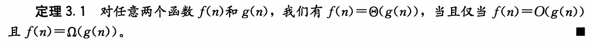
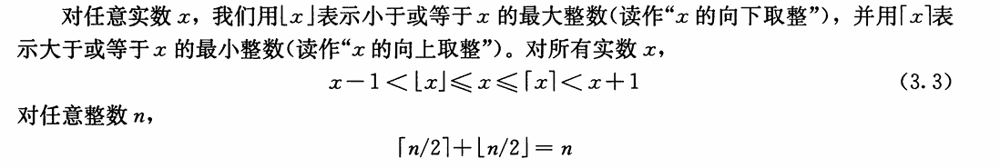

函数的增长
3.1 渐进符号
渐近记号、函数与运行时间
将主要使用渐近记号来描述算法的运行时间。
渐近记号实际上应用于函数
渐近紧确界记号： Θ（big-theta）

- 通俗理解为f (n) 和g(n)同阶，Θ 用来表示算法的精确阶。
渐近上界记号：O(big-oh)

- 通俗的说n满足一定条件范围内，函数f(n)的阶不高于函数g(n)。
[!important]
渐近下界记号：Ω(big-omega)

- 通俗的说n满足一定条件范围内，函数f(n)的阶不低于函数g(n)。
非渐近紧确上界：o(小-oh)

- 通俗理解为f (n) 低于g(n)的阶。
- 例子：
f(n) = n^2 + n,则f(n)=o(n^3)
非渐近紧确下界：ω(小-omega)

通俗理解为f (n) 高于g(n)的阶
ω记号与Ω的关系类似于o和O记号的关系
[!note]

即渐进确界在渐进上界和渐进下界之间
3.2 标准记号与常用函数
向下取整与向上取整

- 其实就是进一或者去尾
模运算

评论区 - 03_函数的增长